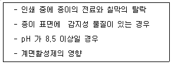
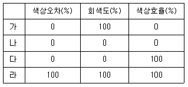
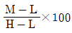
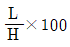
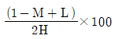
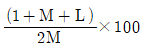

인쇄기사 (2006-08-06 기출문제)
1과목: 인쇄공학
1. 잉크나 물 등이 피 인쇄체에 묻을 때 일어나는 젖음과 가장 관련 있는 것은?
- 확장젖음
- 침적젖음
- 침투젖음
- 부착젖음
(정답률: 알수없음)

2. 연포장 가공에서 주머니 제조를 위한 접착법이 아닌 것은?
- 코트 접착법
- 임펄스 접착법
- 초음파 접착법
- 고주파 접착법
(정답률: 알수없음)
3. 인쇄잉크를 제조할 때 잉크가 충분히 이겨졌는지를 시험하는 측정기는?
- 잉코미터(inkometer)
- 페이도미터(fadeometer)
- 분광광도계(spectrophotometer)
- 입도측정기(grindometer)
(정답률: 알수없음)
4. 크리스탈리제이션(crystallization)현상이 생기는 원인이 아닌 것은?
- 인쇄시간의 간격 과다
- 잉크에 드라이어 사용 과다
- 왁스를 주성분으로 한 콤파운드 사용 과다
- 흡수량 과다 및 수지형 잉크 사용 과다
(정답률: 알수없음)
5. 레오로지적인 성질을 설명하기 위한 모델 중 spring과 dashpot를 병렬로 연결한 모델은?
- 맥스웰(Maxwell)
- 후키안(Hookean)
- 뉴토니안(Newtonian)
- 보이그트(Voigt)
(정답률: 알수없음)
6. 컬러인쇄물을 만들기 위해 황색 위에 적색잉크로 인쇄하려고 한다. 황색판만으로 용지에 인쇄할 경우 단위면적당 잉크가 0.02g, 적색판만으로 같은 용지에 인쇄할 경우는 잉크가 0.01g 묻었다. 같은 용지에 황색ㅍ판 인쇄를 한 후 그위에 적색판을 인쇄한 결과는 단위면적당 잉크량이 0.025g 이었다면 Trapping은 몇 % 인가?
- 100%
- 75%
- 50%
- 25%
(정답률: 알수없음)
7. 액체가 힘을 주지 않은 상태에서 자연적으로 고체 전역 또는 다른 액체 전역에 퍼지는 현상은?
- 배향
- 포이즈
- 액적 형성
- 젖음
(정답률: 알수없음)
8. 다음과 같은 원인과 가장 관계있는 인쇄사고는?

- 뒤묻음
- 겹붙임
- 배어남
- 바탕더러움
(정답률: 알수없음)
9. 잉크의 틱스트로피(Thixotropy)현상이 일어나는 가장 큰 원인은?
- 안료와 비히클의 적기적 이중층
- 스트레스에 대한 스트레인의 완만한 변화
- 잉크의 뉴톤성 성질
- 급격한 스트레스 및 히스테리시스의 변화
(정답률: 알수없음)
10. 지기 가공에서 겉상자 제조공정을 옳게 나열한 것은?
- 급지 → 줄내기 → 풀칠 → 절단 → 접기 → 풀 억제
- 급지 → 줄내기 → 접기 → 풀칠 → 절단 → 풀 억제
- 급지 → 줄내기 → 풀칠 → 접기 → 풀 억제 → 절단
- 절단 → 풀 억제 → 풀칠 → 접기 → 급지 → 줄내기
(정답률: 알수없음)
11. 인쇄시 정전기에 의해 발생하는 문제점과 가장 거리가 먼 것은?
- 뒷묻음
- 피인쇄체의 2장 급지
- 이크의 날림현상
- 종이 뜯김과 캐치업
(정답률: 알수없음)
12. 히키(Hicky)의 발생 원인과 가장 거리가 먼 것은?
- 이물질이 판에 부착되었다.
- 블랭킷에 잉크 딱지가 부착되었다.
- 히기 피커 롤러(hicky picker roller)를 설치하였다.
- 잉크 딱지가 잉크속에 많이 혼합되었다.
(정답률: 알수없음)
13. 뒷묻음이 심해 인쇄물의 뒷면이 달라 붙는 현상은?
- 고스트
- 미스팅
- 스티킹
- 블라인딩
(정답률: 알수없음)
14. 외부의 습도가 높으면 종이가 흡습하여 평형상태로 되거나 외부의 습도가 낮으면 종이가 탈습하여 평형상태로 되어서 종이의 수분 함량이 달라지는데 이러한 현상을 무엇이라 하는가?
- 히스테리시스
- 틱스트로피
- 사이징
- 컨디셔닝
(정답률: 알수없음)
15. 인쇄작업에 큰 영향을 미치는 인쇄잉크의 유동성과 가장 거리가 먼 것은?
- 이행성
- 퍼짐성
- 전이성
- 투명성
(정답률: 알수없음)
16. 책의 표면가공 처리방법에 대한 설명이 잘못된 것은?
- 광택니스는 무색 투명하고 속건성인 수지를 사용한다.
- 비닐칠은 염화비닐과 초산비닐 공중합체의 용액을 사용하여 도포한다.
- 왁스가공은 종이컵, 주스컵, 식료품 등 포장가공에 사용한다.
- 폴리프로필렌 접착은 비닐 도표에 비하여 투명도, 광택도, 내유성은 떨어지나 대전성이 우수하다.
(정답률: 알수없음)
17. 다음 중 인쇄용지의 광택도를 측정하는 계기가 아닌 것은?
- 인가졸(Ingasol) 광택계
- 게르츠(Geltz) 광택계
- 오스트왈트(Ostwalt) 광택계
- 체프만(Chapman) 광택계
(정답률: 알수없음)
18. 캐치프레이즈나 마크 혹은 로고타이프 등의 문자를 만드는 데 사용되며, 문자형의 종류도 다양하고 여러 가지로 짜맞추기가 쉬워서 화살표, 장식선 분야에 활용되는 것은?
- 스크린 톤(screen tone)
- 인스턴트 텍스(instant tax)
- 마스킹 필름(masking film)
- 인스턴트 레터링(instant lettering)
(정답률: 알수없음)
19. 잉크의 성분인 비히클과 안료사이에 물이 들어가서 유화현상이 발생하여 인쇄물의 광택저하가 예상되는 현상은?
- 프로큐레이션
- 모틀링
- 필링 인
- 콜렉팅
(정답률: 알수없음)
20. 일반적으로 인쇄공장 내의 공조 비용을 저렴하고 효율적으로 관리할 수 있는 방안이 아닌것은?
- 단열재을 넣고 북쪽에 창을 만들어 조명이 안정되도록 한다.
- 종이 자장창고의 온도, 습도는 인쇄실 보다 높게 유지한다.
- 바닥재료는 습기를 방지하기 위해 방수가공 한다.
- 냉방과 난방 설계시 온도가 높으면 공기는 상승하고 저온이면 하강한다는 원리를 이용한다.
(정답률: 알수없음)
2과목: 인쇄재료학
21. 종이가 일정한 압력차로 공기를 통과시키는 정도를 무엇이라 하는가?
- 흡유도
- 투기도
- 사이즈도
- 시즈닝도
(정답률: 알수없음)
22. 테스트용 종이 한쪽을 고정시키고 다른 쪽 끝에 하중을 걸어 테스트용 종이가 파괴되었을 때의 하중을 측정하는 강도는?
- 인장강도
- 인열강도
- 내절강도
- 파열강도
(정답률: 알수없음)
23. 잉크의 농도를 엷게 하기 위한 보조제 중 안료 대신 체질안료를 사용하며, 일반적으로 연육공정으로 제조한 투명 또는 반투명 물질은?
- 미디엄(medium)
- 겔리스(gel varnish)
- 콤파운드(compound)
- 광택니스(gloss varnish)
(정답률: 알수없음)
24. 인쇄잉크의 조성에서 비히클의 역할이 아닌 것은?
- 잉크 피막의 형성
- 안료의 분산
- 잉크의 유동성 부여
- 잉크의 농도 부여
(정답률: 알수없음)
25. 물에 침전, 여과되어 있는 안료를 건조 분쇄하지 않고 물과 기름을 감압상태에서 치환하여 크를 만드는 방법과 기계가 맞게 짝지어진 것은?
- Premixing – Ball Mill
- Premixing – Kneader
- Flushing – Ball Mill
- Flushing – Kneader
(정답률: 알수없음)
26. 잉크의 택(tack)에 관한 설명 중 틀린 것은?
- 온도가 올라가면 택은 떨어진다.
- 축임물을 많이 올리면 택은 상승한다.
- 인쇄속도를 올리면 택은 상승한다.
- 잉크량에 따라서도 택은 변한다.
(정답률: 알수없음)
27. 축임물에 사용하는 약품이 아닌 것은?
- (NH4)3PO4
- H3PO4
- IPA
- HF
(정답률: 알수없음)
28. 다음 종이 중 가장 우수한 사이징(sizing)이 요구되는 것은?
- 벽지
- 서적지
- 화장지
- 신문용지
(정답률: 알수없음)
29. 인쇄기 상에서 잉크의 피막발생을 방지하기 위해 사용하는 것은?
- BHT(Buthyl hydro toluene)
- 아마인유
- PE왁스
- 로진
(정답률: 알수없음)
30. 인쇄잉크의 표면건조를 촉진하며 산화성 건조제로 사용되는 재료는?
- 코발트(Co)
- 구리(Cu)
- 철(Fe)
- 마그네슘(Mg)
(정답률: 알수없음)
31. 수목 자원 및 환경보호를 위해 그 사용량이 증가하고 잇는 제지용 펄프는 무엇인가?
- 활엽수 펄프
- 탈묵 펄프
- 침엽수 펄프
- 용해 펄프
(정답률: 알수없음)
32. 잉크 원료 중 알루미늄 킬레이트(Al-chelate), 벤토나이트(bentonite) 등은 주로 어떤 성질을 부여하기 위해 사용하는가?
- 잉크에 활성을 주어 내마찰성 및 거품제거 효과를 향상시키기 위해 사용한다.
- 잉크의 건조피막 형성을 촉진시키고 탈취제로 사용된다.
- 안료에 흡착하여 미립화하고 분산상태를 안정화시키며 자외선흡수제로 사용된다.
- 광택부여, 세트 및 건조시간의 단축, 망점 재현의 개선 등에 사용한다.
(정답률: 알수없음)
33. 오프셋인쇄에 사용되는 축임물의 바람직한 역할이 아닌 것은?
- 화선부에 잉크 부착을 방지한다.
- 판면을 잘 젖게 한다.
- 화선부를 선명하게 한다.
- 판면의 온도를 일정하게 한다.
(정답률: 알수없음)
34. 고해도(叩解度)가 증가할수록 종이 품질과의 관계를 옳게 설명한 것은?
- 지합(formation)이 양호해진다.
- 종이 밀도가 떨어진다.
- 평활도가 떨어진다.
- 불투명도가 올라간다.
(정답률: 알수없음)
35. 인쇄 잉크의 제조 과정이 바르게 된 것은?
- 교반 → 연육 → 조합 → 검사
- 교반 → 조합 → 검사 → 연육
- 연육 → 조합 → 교반 → 검사
- 검사 → 조합 → 연육 → 교반
(정답률: 알수없음)
36. PS 판에 대한 설명 중 틀린 것은?
- 암반응이 없어 유효기간이 길다.
- 온·습도의 영향을 거의 받지 않는다.
- 중크롬산감광액을 사용하므로 재현성이 우수하다.
- 처리가 간단하고 수정이 용이하다.
(정답률: 알수없음)
37. 다음 중에서 합성 유기안료가 아닌 것은?
- 알루미나(alumina)
- 리솔레드(lithol red)
- 레이크레드 C(lake red C)
- 퍼머넌트그린(permanent green)
(정답률: 알수없음)
38. 포장용 판지의 인쇄 중 잉크 택의 과다에 의한 층분리(Delamination)가 가장 발생하기 어려운 인쇄 환경은?
- 인쇄실 온도가 낮을 때
- 화선 면적이 작을 때
- 인쇄속도가 빠를 때
- 잉크량이 많을 때
(정답률: 알수없음)
39. 셀룰로스로 구성된 종이는 물을 잘 흡수하는 성질이 있다. 종이의 물 흡수 능력을 조절하기 위해 첨가하는 주된 물질은 무엇인가?
- 충전제
- 장섬유
- 보류향상제
- 사이즈제
(정답률: 알수없음)
40. 1g의 유지중에 함유된 유리 지방산을 중화하는데 필요로 하는 KOH 의 mg 수를 무엇이라고 하는가?
- 겔화가
- 비누화가
- 요오드가
- 산가
(정답률: 알수없음)
3과목: 특수인쇄학
41. 그라비어 인쇄기의 잉크공급 장치가 아닌 것은?
- 침적형
- 온라인형
- 분사형
- 롤러 전이형
(정답률: 알수없음)
42. 일반적인 인쇄공정이 내면도장 → 표면사이징 → 인쇄 → 마무리도장 → 가공으로 이루어지며, 본 인쇄 전에 인쇄효과를 위해 바탕색 인쇄가 필요한 방식은?
- 액정 인쇄
- 카본 인쇄
- 전사 인쇄
- 금속 인쇄
(정답률: 알수없음)
43. 일반적으로 백색광 등으로 재생되는 홀로그램의 종류가 아닌 것은?
- 멀티플렉스(multiflex) 홀로그램
- 레인보우(rainbow) 홀로그램
- 리프맨(lippman) 홀로그램
- 패턴(pattern) 홀로그램
(정답률: 알수없음)
44. 디지털 인쇄의 장점이 아닌 것은?
- 인쇄판이 불필요하므로 시간이 단축된다.
- 양면 컬러 인쇄를 할 수 있다.
- 데이터(data)의 보존과 재사용이 편리하다.
- 레이저광이나 실린더를 사용치 않으므로 인체에 해가 없다.
(정답률: 알수없음)
45. 일반적으로 스크린인쇄시 인쇄물이 번질 때의 대응책 중 옳지 않은 것은?
- 잉크 점도를 높인다.
- 스퀴지의 압력을 낮춘다.
- 제판과 인쇄물의 이격거리를 조정한다.
- 잉크에 지연 용제를 첨가한다.
(정답률: 알수없음)
46. 유연한 고무 또는 수지로 된 인쇄판과 액체 건성 잉크를 사용한 볼록판 인쇄를 말하고, 피인쇄체로는 종이, 셀로판, 폴리에틸렌, 비닐, 스틸렌, 알루미늄박 등이 쓰이며, 대부분 지대, 지기, 연질 포장 등의 인쇄에 널리 사용되는 방식은?
- 오프셋 인쇄
- 스크린 인쇄
- 플렉소 인쇄
- 그라비어 인쇄
(정답률: 알수없음)
47. 스크린인쇄에서 직접감광제판법의 인쇄판에 사용되는 감광액의 구비조건이 아닌 것은?
- 온·습도의 변화에 안전하며 수축등이 일어나지 않아야 한다.
- 핀홀(pinhole)또는 막이 갈라지지 않아야 한다.
- 화선이 잘 빠지고 선명하게 현상되어야 한다.
- 도포시에는 스크린사와의 접착성이 약하고, 탈막하기 쉬워야 한다.
(정답률: 알수없음)
48. 그라비어 제판, 인쇄시 무아레(moire) 현상이 일어날 수 있는 원인과 가장 거리가 먼 것은?
- 용지의 사이징(sizing) 불량에 의해
- 스크린 각도에 의해
- 스크린 선수에 의해
- 잉크 홈의 면적에 의해
(정답률: 알수없음)
49. 라미네이팅(접합) 합판을 만들어 나뭇결 무늬를 인쇄할 경우 가장 적당한 인쇄방법은?
- 탐폰 인쇄
- 전사 인쇄
- 그라비어 인쇄
- 잉크 제트 인쇄
(정답률: 알수없음)
50. 스크린 인쇄에 있어서 판 막힘이 생기는 원인이 아닌 것은?
- 잉크 건조가 빠르다.
- 점도가 너무 낮다.
- 잉크 자체가 불량이다.
- 용제를 잘못 사용하였다.
(정답률: 알수없음)
51. 일반적으로 옷감이나 천에 전사하는데 가장 적합한 방식은?
- 용해 전사
- 감압 전사
- 승화 날염 전사
- 습식 전사
(정답률: 알수없음)
52. 플렉소 인쇄기에서 아닐록스 롤러의 역할은?
- 잉크를 제거하는 역할
- 잉크집에서 판으로 잉크를 옮기는 역할
- 원색 인쇄시 무아레(moire) 를 방지하는 역할
- 원색 인쇄시 가늠 맞춤의 기준
(정답률: 알수없음)
53. 플렉소 인쇄기의 잉크옮김롤러 중에서 대형 홈을 가지고 있으며, 같은 선수에 비하여 깊은 홈을 형성하고 20~40% 의 잉크량을 많이 전이할 수 있는 롤러는?
- 피라미드형
- 격자형
- 사선형
- 모래형
(정답률: 알수없음)
54. 화상을 형성시키려는 종이 뒤에 전기장을 주고 노즐로 잉크를 분사시키면 전기장에 의해 종이에 문자나 화상이 기록되는 인쇄방식은?
- bar code printing
- Ink jet printing
- OMR printing
- Spot carbonizing printing
(정답률: 알수없음)
55. UV 건조 장치와 비교하여 IR 건조 장치의 특징이 아닌 것은?
- 평면 및 양면 건조가 가능하다.
- 설치 비용이 저렴한 편이며 일반 잉크도 사용할 수 있다.
- 조사장치의 급지부에 별도의 장치가 필요하며, 특수한(금,은박 등) 인쇄물에 효과가 우수하다.
- 일반 용제의 사용이 가능하다.
(정답률: 알수없음)
56. 플렉소 인쇄기는 인쇄부를 통과하는 피인쇄체의 주행방향에 따라 보통 3가지로 구분된다. 3가지 유형이 아닌 것은?
- 스택(stack)형
- 인라인(in-line)형
- 드럼(drum)형
- 실린더(cylinder)형
(정답률: 알수없음)
57. 그라비어 인쇄에 있어서 인쇄한 후 점착성 불량으로 잉크가루가 날리는 현상으로 용제의 희석과 용지의 흡유성 과다 등이 원인이 되는 현상은?
- 스크리닝(screening)
- 브러싱(brushing)
- 초킹(chalking)
- 배어남(through)
(정답률: 알수없음)
58. 액정은 분자의 배열 방법에 따라서 3가지로 분류할 수 있는데 여기에 속하지 않은 것은?
- 디스네마틱 액정
- 네마틱 액정
- 스메틱 액정
- 콜레스테릭(코레스틱) 액정
(정답률: 알수없음)
59. 비지네스폼 인쇄기에서 고속으로 공급되는 폼을 Z 형으로 접지하는 것은?
- 콜레이터(collator)
- 다이 커터(die cutter)
- 디태처(detacher)
- 셔터 핑거(shutter finger)
(정답률: 알수없음)
60. 인쇄회로기판(PCB)의 특징이 아닌 것은?
- 대량 생산이 가능하다.
- 부품 조립시 정확성을 기할 수 있다.
- 신뢰성이 향상된다.
- 배선과 전력이 증가된다.
(정답률: 알수없음)
4과목: 인쇄색채학
61. 다음 중 현색계의 대표적인 표색계는?
- CIE 표준 표색계
- XYZ 표색계
- 먼셀 표색계
- KSA 표색계
(정답률: 알수없음)
62. 야간에 붉은 빛 아래에서 눈(雪)을 볼 때에도 우리는 붉은 색의 눈으로 지각하지 않고 흰색으로 인지하는데 이와 같은 시각 현상과 관계있는 것은?
- 항상성
- 색온도
- 잔상
- 동화효과
(정답률: 알수없음)
63. 이상적인 잉크일 경우에 색상오차, 회색도, 색상 효율은?

- 가
- 나
- 다
- 라
(정답률: 알수없음)
64. 감색혼합시 실제의 색료 혼합(Colorant Mixture)은 이론상의 색 혼합과는 차이가 있는데 실제의 색료 혼합에 대한 설명 중 옳은 것은?
- 빨강, 노랑, 파랑을 섞으면 아주 맑은 흑색이 된다.
- 두 보색을 균형있게 섞으면 중성의 회색이 된다.
- 검정을 쓰지 않고서는 다양한 변화의 회색을 만들 수 없다.
- 중성 회색에 스펙트럼 순색을 섞으면 채도와 명도가 모두 높아진다.
(정답률: 알수없음)
65. 특정한 조명 및 관측조건에서 이 물체 표면의 휘도(L)와 산화마그네슘의 표면 백색면의 휘도(L0)와의 비(L/L0)를 무엇이라 하는가?
- 규약반사율
- 시감반사율
- 분광조성
- 분광분포
(정답률: 알수없음)
66. 푸르킨예 현상에 대한 설명 중 옳은 것은?
- 체코의 생리학자 푸르킨예가 발견한 현상으로 추상체가 밤에만 반응한다는 사실을 발견하였다.
- 이 현상은 파장이 긴 색이 가장 먼저 사라지고 파장이 짧은색이 나중에 사라지는 현상이다.
- 조명이 점차 어두워질 경우 망막에 있는 추상체가 반응하게 되므로 파란색이 다른 색들보다 먼저 영향을 받게 된다.
- 이 현상은 감도의 파장분포에 있어 밝은 곳에서는 간상체로 부터 이동하고, 어두운 곳에서는 추상체로부터 이동하는 현상을 의미한다.
(정답률: 알수없음)
67. 오스트발트 표색체계에서 순색량을 C, 백색량을 W, 흑색량을 B 라고 하였을 때 순도(Ostwald purity)는 어떻게 나타내는가?
- C/W+B
- W/B
- C/W
- C/B
(정답률: 알수없음)
68. 태양이 지평선보다 2~3°이상 또는 이하일 때의 하늘의 밝기로부터 밤하늘에 떠 있는 반달(半月) 정도의 밝기까지의 범위를 포함하는 조명 범위는?
- 백주시(day vision)
- 박명시(twilight vision)
- 야간시(night vision)
- 추상체(cone)
(정답률: 알수없음)
69. RGB 방식에서 CMYK 방식으로 전환할 경우 가장 재현율이 높아 오차 발생이 적은 색채계열은?
- 적색(R)
- 녹색(G)
- 황색(Y)
- 청색(B)
(정답률: 알수없음)
70. 져드(Judd)의 조화론에서 색채조화의 원리 중 “색채간에 서로 공통되는 속성이나 국면이 있을 때 조화된다.”는 원리를 설명한 것은?
- 질서의 원리
- 비모호성의 원리
- 대비의 원리
- 유사의 원리
(정답률: 알수없음)
71. 디지털 기기를 사용한 인쇄시 인간이 원고를 보고 인지하는 것과 스캐너 또는 모니터를 통해 보여지는 것과는 다르다. 따라서 인쇄원고의 데이터(data)가 인쇄원고와 동일한 색상의 최적 결과물을 얻기 위하여 입ㆍ출력기의 표준화를 실시하는 것을 무엇이라고 하는가?
- 컬러 교정(Color Correction)
- 분광 조성(Wave-Length Concentration)
- 컬러 특성(Color Characterization)
- 캘리브레이션(Calibration)
(정답률: 알수없음)
72. 색의 3속성을 옳게 설명한 것은?
- 색상:색의 포화정도, 채도:색의 이름, 명도:색의 밝기
- 색상:색을 구분하는 색의 이름, 채도:색의 포화도, 명도:색의 밝고 어두운 정도
- 색상:색의 밝기, 채도:색의 포화도, 명도:색의 밀도
- 색상:색을 구분하는 색의 이름, 채도: 색의 밝기, 명도:색의 순도
(정답률: 알수없음)
73. 색을 색상, 명도, 채도의 삼속성으로 나누어 HV/C 라는 형식에 의해 번호로 표시한 표색계는?
- 오스트발트 표색계
- 먼셀 표색계
- CIE 표색계
- 국제조명위원회 표색계
(정답률: 알수없음)
74. 색광의 분광분포에 있어 녹색광의 에너지 분포가 상대적으로 가장 높은 범위는?
- 300~350nm
- 350~400nm
- 450~500nm
- 500~550nm
(정답률: 알수없음)
75. GATF 표색계에서 색상오차(Hue Error)를 나타낸 식은? (단, H, M, L 은 세가지 필터에 의해 판정한 농도치 중에서 최대치, 중간치, 최소치를 의미한다.)




(정답률: 알수없음)
76. 문(P.Moon)과 스펜서(D.E. Spencer)의 조화 이론에 대한 설명 중 틀린 것은?
- 동등명도(同等明度)의 배색은 잘 조화된다.
- 동등색상(同等色相)의 배색은 매우 잘 조화된다.
- 균형있게 선택된 무채색의 배색은 유채색의 배색에 못지 않은 아름다움을 갖는다.
- 동등색상이면서 동등채도인 단순한 디자인은 많은 색상에 의한 복잡한 디자인보다도 아름다울 때가 더 많다.
(정답률: 알수없음)
77. 다음 그래프에서 먼셀명도(Munsell Value) V 와 시감반사율(視感反射率) Y(%) 와의 관계를 옳게 나타낸 것은?
- A
- B
- C
- D
(정답률: 알수없음)
78. 먼셀 표색계의 특징으로 틀린 것은?
- R, Y, G, B, P 의 기본 5색상 코드로 이루어져 있다.
- 주황색에 해당하는 색상코드는 YR 이다.
- 명도는 0~10 까지 기본단계로 이루어져 있다.
- 먼셀 표색계의 모든 색상에 대하여 같은 채도 단계로 구성되어 있다.
(정답률: 알수없음)
79. 메타메리즘(metamerism)에 대한 설명이 아닌 것은?
- 물체색에 포함되어 있는 서로 다른 안료의 특성이 시각에 의해 동일시 되는 것으로 조명광이 다르더라도 항상 같은 색으로 느껴진다.
- 물체색으로부터 눈에 입사하는 색자극이 서로 같기 때문이다.
- 분광반사율이나 투과율이 달라도 어떤 조명광 아래에서는 같은 색으로 보인다.
- 물체색의 등색은 분광반사율이나 분광투과율이 동일할 때 이루어질 수 있다.
(정답률: 알수없음)
80. 다음 여러 가지 시지각적 특성 중 개구색과 가장 관련이 없는 것은?
- 명도
- 광택도
- 채도
- 색상
(정답률: 알수없음)
5과목: 인쇄작업론 및 품질관리
81. 로터리스크린(rotary screen) 인쇄기의 용도를 가장 잘 설명한 것은?
- 병이나 캔(can) 등의 곡면 인쇄에 매우 적합하다.
- PCB(printed circuit board)의 인쇄에 매우 적합하다.
- 티-셔츠와 같은 소재의 다색인쇄에 편리하다.
- 장판지와 같이 길이가 긴 인쇄물의 다색인쇄에 편리하다.
(정답률: 알수없음)
82. 인쇄물의 품질관리를 위한 스케일 중에서 망판의 하이라이트에서 중간조를 거쳐 섀도에 이르기까지 망점의 크기를 망점면적률(%)로 단계적으로 표시한 스케일은?
- 컬러 패치(color patch)
- 스타 타깃(star target)
- 그라데이션 스케일(gradation scale)
- 도트게인 스케일(dot gain scale)
(정답률: 알수없음)
83. 오프셋 윤전인쇄기의 접지장치 중에서 칼 받침에 바늘이 붙어 있고 바늘이 들어가거나 나오며 종이를 절단시킴과 동시에 종이를 누르면서 회전하므로 종이가 운반되어지는 장치는?
- 디텍트 커트(detector cut)
- 오토 페이스트(auto paste)
- 핑거(finger)
- 폴딩 실린더(folding cylinder)
(정답률: 알수없음)
84. 블랭킷 대향형(blanket-to-blanket type) 오프셋 매엽기에 대한 설명 중 틀린 것은?
- 양면 인쇄가 용이하다.
- 압통이 필요없다.
- 블랭킷통의 한 쪽에 그리퍼(gripper)가 설치되어 있다.
- 편면 인쇄가 어렵다.
(정답률: 알수없음)
85. 몰톤리스(moltonless)롤러로 개발된 것으로서 고무 롤러 표면에 고분자 탄성체와 합성 섬유로 만든 피복재는?
- 댐프닝 슬리브(dampening sleeve)
- 브루셋(bruset)
- 스트레치 클로스(stretch cloth)
- 케미댐퍼(chemidamper)
(정답률: 알수없음)
86. 오프셋 인쇄기에 있어서 달그렌 축임물 장치(Dahlgren damping system) 이란 무엇인가?
- 간헐적 축임물 장치
- 알코올을 섞어서 계면장력을 억제하는 축임물 장치
- 축임물 장치를 사용하지 않는 무수 오프셋
- 축임물과 잉크를 한 롤러로 판면에 공급하는 축임물 장치
(정답률: 알수없음)
87. 인쇄작업시 판을 구부릴 때의 주의점에 대하여 설명한 것 중 옳은 것은?
- 판 양단의 접어 구부림사이의 거리는 갭에서 갭까지의 원주 길이와 같다.
- 접은 자리 사이의 거리는 판통의 갭사이보다도 조금 짧게 한다.
- 판의 물림 측은 직각으로 구부리지 않으면 안된다.
- 물림 끝의 테두리는 약간 짧은 것이 좋다.
(정답률: 알수없음)
88. 복합 접지기(combination folder)의 일반적인 구성 장치가 아닌 것은?
- 버클(buckle) 접지기
- 리본(ribon) 접지기
- 포머(former) 접지기
- 나이프(knife) 접지기
(정답률: 알수없음)
89. 인쇄기의 구성 부분 중 급지부에 속하는 것은?
- 블라스트(blast)
- 편심륜
- 습수 롤러
- 스태커(stacker)
(정답률: 알수없음)
90. 인쇄품질 관리용 스케일 중 센시티비티 가이드의 주된 용도는?
- 도트게인 체트
- 해상력 측정
- 인쇄판 빛쬠량 체크
- 더블링 및 슬러 체크
(정답률: 알수없음)
91. 그라비어 인쇄기에서 그라비어 실린더의 비화선부에 묻은 잉크를 제거해 주는 역할을 하는 장치는?
- 스캐닝 실린더(scanning cylinder)
- 압통(impression cylinder)
- 독터 블레이드(doctor blade)
- 아닐록스 롤러(anilox roller)
(정답률: 알수없음)
92. 잉크 장치의 잉크 묻힘 롤러에 관한 사항으로 틀린 것은?
- 착육 롤러 또는 폼 롤러(form roller)라고도 한다.
- 판 면에 잉크를 묻혀주는 롤러이다.
- 천연고무나 합성고무가 일반적으로 사용된다.
- 압력이 동일해야 하므로 반드시 지름이 같은 여러 개의 롤러로 구성되어야 한다.
(정답률: 알수없음)
93. 윤전인쇄시 급지할 때 용지의 장력을 잡아주는 롤러는?
- 묻힘 롤러
- 옮김 롤러
- 댄서 롤러
- 바이브레이트 롤러
(정답률: 알수없음)
94. 인새압이 약한 결점이 있지만 경제적인 이유로 증가하고 있는 오프셋 윤전 인쇄기의 통 배열 방식은?
- CIC 형
- 새틀라이트형
- 오픈형
- B-B형
(정답률: 알수없음)
95. 직화 – 열풍 건조 장치와 비교하여 고속 – 열풍 건조장치의 특징이 아닌 것은?
- 종이가 받는 열의 영향이 적다.
- 종이에 가해지는 온도가 낮다.
- 장치가 작고 가격이 싸다.
- 건조 능력의 미세한 조절이 가능하다.
(정답률: 알수없음)
96. 연속적으로 품질의 향상을 도모하기 위한 관리사이클의 4대 요소와 가장 거리가 먼 것은?
- 목표나 목적을 부여하기 위해서 계획(plan)이 필요하다.
- 일을 진행하는 데에는 교육된 표준에 따라서 일을 실시(do)한다.
- 실시 결과는 수시로 점검(check)한다.
- 표준을 교육(education)한다.
(정답률: 알수없음)
97. 중첩식 급지기(stream feeder)에 대한 설명 중 틀린 것은?
- 급지 파일에서 분리된 종이는 한 장이 완전히 급지된 다음 일정한 간격을 두고 급지판(feedboard)상을 이동하여 가늠맞춤 장치로 송지된다.
- 인쇄용지의 크기가 큰 경우에 매우 유리하며 주로 대형 인쇄기에서 사용된다.
- 별도의 감속 장치를 설치하지 않아도 종이가 가늠맞춤 장치에 부딪칠 때 튀어나오거나 구부러질 위험이 적다.
- 종이의 중첩에 의하여 급지 테이프와 종이 누름 바퀴사이의 마찰력이 커지므로 급지판에서 종이의 조절이 쉽다.
(정답률: 알수없음)
98. 플렉소그래피 인쇄에서 가장 많이 사용되는 가압 방식은?
- 무압식
- 원압식
- 윤전식
- 평압식
(정답률: 알수없음)
99. 피더(feeder) 종이 보내기 장치의 점검 사항 중에서 확인해야 할 점이 아닌 것은?
- 앞 맞추개의 위치 조정
- 서커의 작동 조정
- 피더 롤의 압, 테이프의 당김도, 종이 누름바퀴 등의 압과 위치 조정
- 전후, 좌우의 추리개 조정
(정답률: 알수없음)
100. 오프셋 윤전기의 냉각 장치를 옳게 설명한 것은?
- 냉각 장치는 냉각에 의하여 인쇄 품질과 종이의 장력을 안정시키는 역할을 한다.
- 냉각 장치는 보통 4~5개의 실린더로 구성되고 실린더 내부에 공기를 순환시켜서 냉각하는 구조로 되어 있다.
- 냉각 장치는 잉크 중의 휘발성 물질을 제거하여 잉크막을 경화시킨다.
- 냉각수 온도가 낮을 때보다 높으면 냉각 실린더 표면에 물방울이 생겨서 종이가 줄어들거나 얼룩이 생긴다.
(정답률: 알수없음)